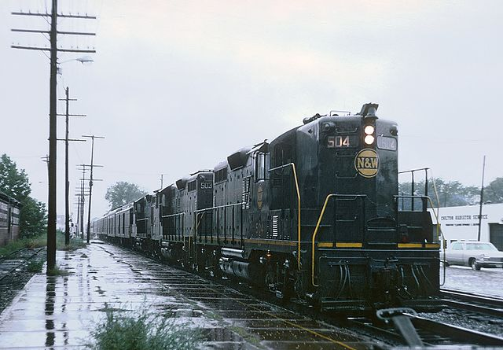
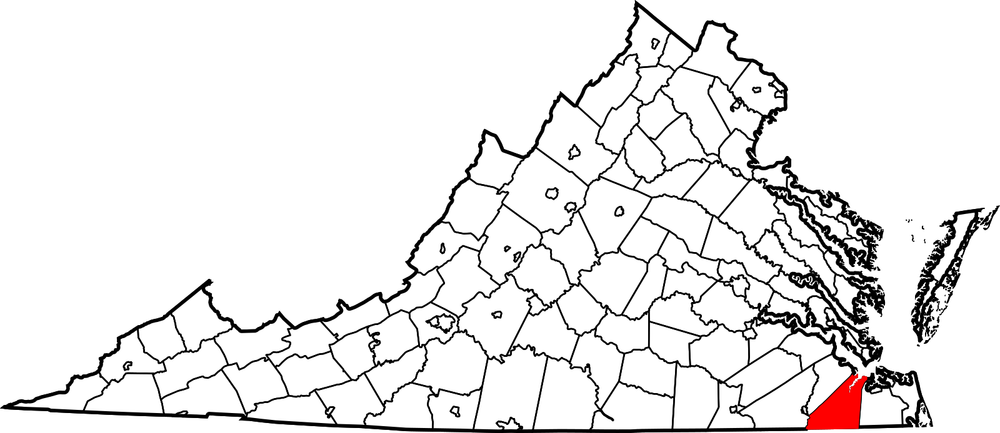
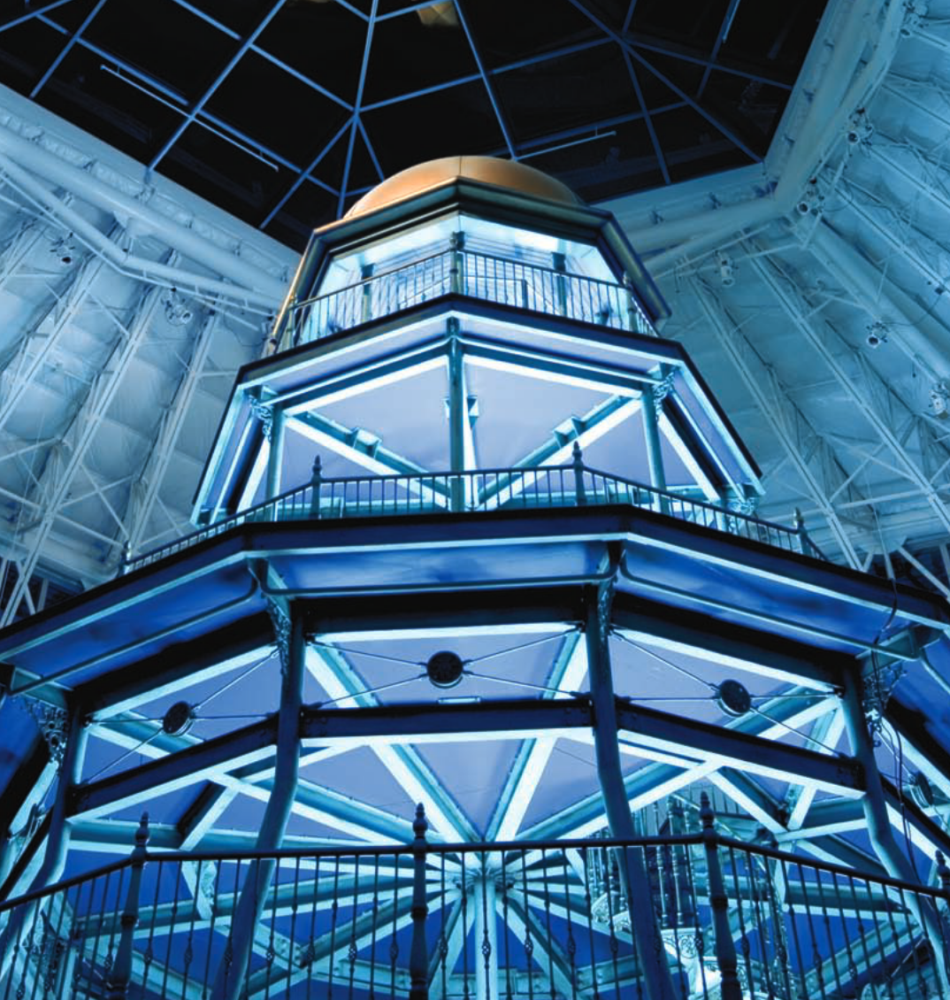

|
Turbulence Modeling Resource |
NASA High Fidelity CFD Workshop 2025
  
NASA's CFD Vision 2030 Study
(
https://ntrs.nasa.gov/api/citations/20140003093/downloads/20140003093.pdf), and the subsequent Certification by Analysis 2040 Study
(
https://ntrs.nasa.gov/api/citations/20210015404/downloads/NASA-CR-20210015404%20updated.pdf),
emphasized the need for development of advanced computational tools that are robust, efficient (cost effective)
and accurate. For computational fluid dynamics (CFD) tools to provide accurate prediction near the edges of
the flight envelope (e.g., high-lift), high-fidelity scale-resolving computational tools are needed.
The Revolutionary Computational Aerosciences (RCA), under NASA's Transformational Tools and Technologies (TTT) Project,
has been engaged in sponsoring such tool development along with experiments to provide CFD validation data.
RCA has a technical challenge, maturing in September 2025, to develop and demonstrate computationally efficient,
eddy-resolving modeling tools that predict maximum lift coefficient for transport aircraft with the same accuracy
as certification flight tests. The focus of the RCA research toward accomplishing this challenge, within NASA
and the sponsored extramural research, has been aimed at developing and demonstrating wall-modeled large-eddy
simulation (WMLES) capability.
The primary objective of the workshop is to assess the progress made toward the RCA technical challenge.
Presentations will be made in the following areas of research:
Please see the workshop agenda (below) for more details.
The workshop venue is about 18 miles (20 minutes drive) from NASA Langley Research Center.
If you are interested in attending the workshop, please send an email message to
CFD2025@ama-inc.com. This is also the
email address for all logistical questions.
For any technical questions, contact:
Mujeeb Malik (m.r.malik@nasa.gov) or
Gary Coleman (g.n.coleman@nasa.gov).
The workshop agenda is available below, under Workshop Links.
Most of the presentation are by NASA scientists whose work is sponsored by the TTT-RCA project. Presentations
also include ongoing or recently concluded RCA-sponsored research performed at other institutions.
RCA Program Review Board will consist of:
The
Courtyard Suffolk Chesapeake hotel
and the
TownePlace Suites hotel
are next door at 8060/8050 Harbour View Boulevard, Suffolk, Virginia, USA, 23435 (walking distance to the meeting venue). However, the special nightly rate for the workshop
is no longer available.
Other hotels are within driving distance.
Workshop Links:
Suffolk VA is served by both the Norfolk International Airport and Newport News/Williamsburg
International Airport (both 30+ minute drive from the venue). Richmond VA is about
1-1.5 hour drive away, and Washington DC is a 3-3.5 hour drive away.
Return to: Turbulence Modeling Resource Home Page
Recent significant updates:
05/19/2025 - V2c of final agenda posted (minor typos)
05/14/2025 - V2 of final agenda posted
04/28/2025 - V1 of final agenda posted
02/21/2025 - Posted draft agenda and hotel booking informarion
Page Curators: Christopher Rumsey,
Ethan Vogel,
Clark Pederson
Last Updated: 04/08/2025